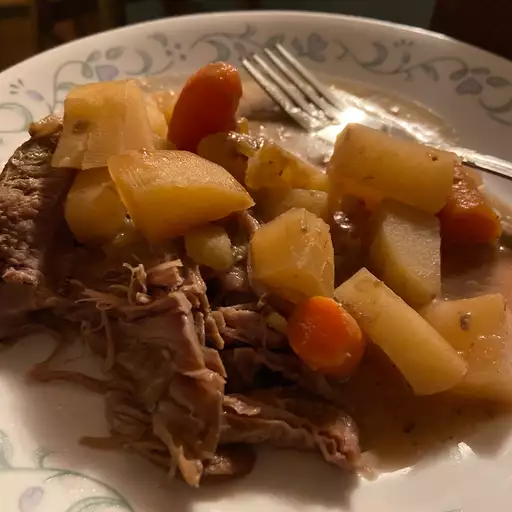

Slow Cooker Venison Roast

Description
A venison roast crockpot dinner, slow cooked with onion, creamy mushroom soup, a dab of this and a spice of that. It's a simple, tasty way to enjoy game meat.
Ingredients
- 3 pounds boneless venison roast
- 1 large onion, sliced
- 1 tablespoon soy sauce
- 1 tablespoon Worcestershire sauce
- 1 tablespoon garlic salt
- ¼ teaspoon ground black pepper
- 1 (1 ounce) package dry onion soup mix
- 1 (10.75 ounce) can condensed cream of mushroom soup
Directions
- Clean venison roast and place in a slow cooker. Cover with onion slices, then sprinkle with soy sauce, Worcestershire sauce, garlic salt, and pepper.
- Stir onion soup mix and condensed soup together in a small bowl. Pour mixture over venison.
- Cover and cook on Low setting for 6 hours.